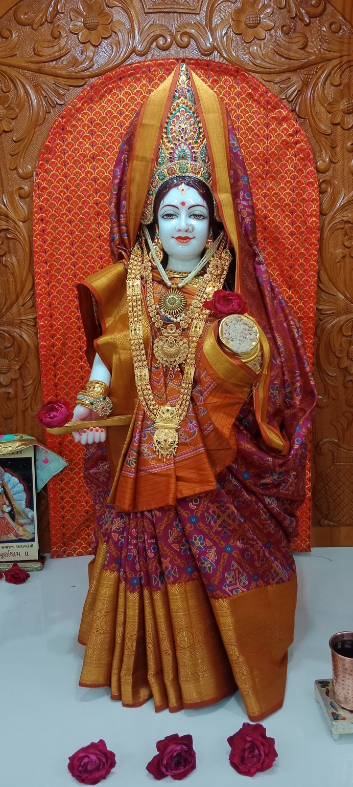

ઉત્સવ
મંદિર કાર્યક્રમ
આગામી ઉત્સવની માહિતી
તારીખ અને કાર્યક્રમની વિગતો અહીં પ્રદર્શિત થશે.
શ્રી મા અન્નપૂર્ણા
અન્ન, સેવા અને આશીર્વાદની પવિત્ર પરંપરાથી જોડાયેલું ધામ.
માતા અન્નપૂર્ણા સમૃદ્ધિ, અન્ન અને કરુણાના પવિત્ર સ્વરૂપ તરીકે ભક્તોના હૃદયમાં વસે છે.
આ વેબસાઈટ મંદિરના દર્શન, દૈનિક આરતી, ઉત્સવો, સેવા પ્રવૃત્તિઓ અને ભક્તોને જરૂરી માહિતી એક જ સ્થળે પહોંચાડવા માટે બનાવવામાં આવી છે.
દર્શનની માહિતી જુઓ ↗
માતાના પાવન દર્શન સાથે ભક્તિ અને સેવા વચ્ચેનું સુંદર જોડાણ અનુભવીએ. આ વિભાગમાં મંદિરની વિશેષ પરંપરા, સેવા અને આધ્યાત્મિક સંદેશ રજૂ કરી શકાય છે.
ચોક્કસ સમય મંદિરના તહેવાર અને વિશેષ આયોજન અનુસાર બદલાઈ શકે છે.
તારીખ અને કાર્યક્રમની વિગતો અહીં પ્રદર્શિત થશે.
મંદિરના નવા કાર્યક્રમો માટે આ વિભાગ અપડેટ થશે.
સેવા સંબંધિત માહિતી અહીં ઉપલબ્ધ રહેશે.
માતાજીના પાવન દર્શન અને આરતીની માહિતી.
વધુ જાણો →અન્નપૂર્ણા માતાની ભાવનાથી સેવા અને પ્રસાદ સાથે જોડાવાનો માર્ગ.
સંપર્ક કરો →તહેવારો, વિશેષ પૂજા અને મંદિર કાર્યક્રમોની માહિતી.
કાર્યક્રમ જુઓ →દાન, સેવા, કાર્યક્રમ, દર્શન અથવા અન્ય મંદિર સંબંધિત પૂછપરછ માટે સંદેશ મોકલો.
YouTube અને સોશિયલ